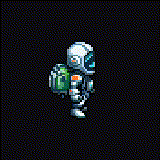

death ↔ slide 구분 · 측면(east) GIF
WEAVERdeath 방식 선택
"death가 slide랑 비슷하다" 해결. slide는 회피용이라 앞으로 낮게 OK → death를 명확히 다르게. 아래 GIF는 폰에서 실제 재생. slide(참고) 옆에 death 2안을 놓고 구분되는지 보세요.
참고
slide
회피 — 앞으로 낮게

유지 확정분. death가 이것과 달라야 함.
death 안
A. 무릎 붕괴
주저앉아 무너짐
물리적 쓰러짐. 단 여전히 낮게 깔려 slide와 다소 유사.
추천
B. 분해/소멸
기화 — 조각으로 흩어짐

slide와 절대 안 헷갈림(바닥 X·위로 흩어짐) + 우주항해자 "기화" 테마 정합. 사망 피드백 명료.
?
death 방식 택1 (A 무릎 붕괴 / B 분해·소멸 — 추천). 고르면 east·south 둘 다 확정·교체하고 5종 애니를 닫습니다.